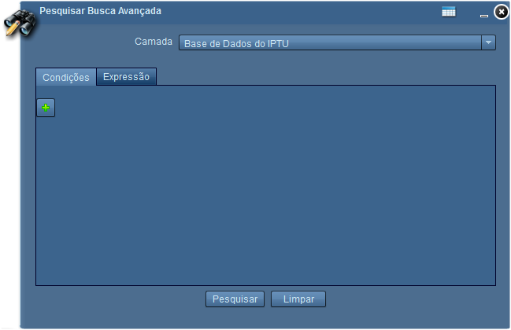
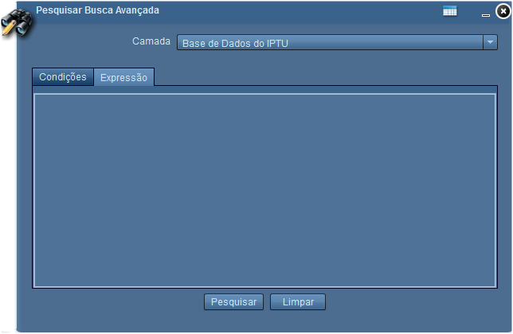

Pesquisar Busca Avançada
A ferramenta Pesquisar Busca Avançada realiza buscas baseada nas condições inseridas, e camada previamente selecionada.

Camada: define em qual camada será realizada a pesquisa;
Adicionar Condição: adiciona condição para busca;
Abrir Data Grid: exibe Lista de Resultados;

Expressão: possibilita editar expressões para pesquisa;
Pesquisar: executa pesquisa com condições e expressões adicionadas;
Limpar: limpa condições e expressões;
Fechar: fecha janela da ferramenta Pesquisar Busca Avançada;
Minimizar: minimiza janela da ferramenta Pesquisar Busca Avançada.